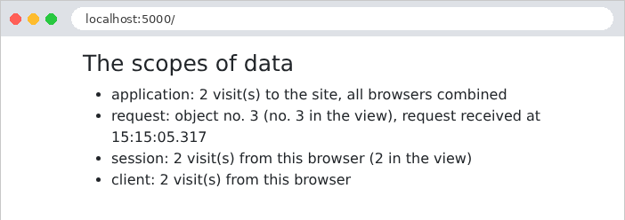

6. Escopos de dados
Uma aplicação web atende muitos usuários ao mesmo tempo, e cada usuário faz inúmeras requisições. Os dados podem, portanto, ser compartilhados em vários níveis, conhecidos como seu escopo:
- escopo de aplicação: os dados são compartilhados por todos os usuários durante toda a vida útil do servidor (a lista de médicos, por exemplo);
- escopo de requisição: os dados existem apenas durante uma única requisição (o modelo de uma view, o usuário logado conforme identificado para aquela requisição);
- escopo de cliente: os dados são específicos de um usuário e devem persistir de uma requisição para a seguinte (o idioma selecionado, o usuário logado).
As aplicações web usam há muito tempo uma sessão mantida no servidor para esse último escopo: uma memória específica de cada navegador, identificada por um cookie de identificação ([JSESSIONID] em [Java], [PHPSESSID] em [PHP]). A sessão do [Flask] é diferente: como vimos no Exemplo 20, ela é armazenada em um cookie assinado no lado do cliente. O servidor não armazena nada entre duas requisições de um mesmo usuário: diz-se que ele é stateless (sem estado). Isso torna possível, por exemplo, executar vários servidores idênticos atrás de um balanceador de carga: qualquer um deles pode tratar qualquer requisição. A contrapartida é que um cookie está sob o controle do usuário; ele pode lê-lo e tentar modificá-lo. Por isso, apenas dados não sensíveis são armazenados ali e — se os dados precisam ser confiáveis — eles são assinados pelo servidor, que então detecta qualquer modificação: é o caso da sessão do [Flask] e do token de autenticação (veja o capítulo sobre autenticação).
No [Flask], cada escopo tem seu próprio contêiner:
Escopo | Suporte | Duração |
aplicação | Um objeto criado na inicialização, armazenado em [app.extensions] e recuperado por [current_app] (exemplo 06) | Toda a vida útil do servidor, compartilhado por todas as requisições |
Requisição | O objeto [g] e o próprio objeto [request] (exemplo 16) | o processamento de uma requisição |
sessão | o objeto [session], um dicionário armazenado em um cookie assinado | até o navegador ser fechado (por padrão) |
cliente | um cookie padrão definido por [set_cookie] (exemplo 22) | a duração definida por [max_age] |
Os objetos [current_app], [g], [request] e [session] são importados do pacote [flask]. Eles são proxies (exemplo 05): durante uma requisição, cada um identifica o objeto dessa requisição (ou da aplicação que a processa).
6.1. Exemplo 23: Escopos
6.1.1. Os objetos: services/counter.py
- Linhas 7–18: um contador de visitas, com escopo de aplicação: um único objeto, compartilhado por todas as requisições. Como na lista de tarefas do Exemplo 20, um lock protege o incremento: a instrução [self._total += 1] não é atômica (ela lê o valor, incrementa e depois grava), e duas threads que a executem simultaneamente poderiam ler o mesmo valor — resultando na perda de uma visita;
- linhas 22–30: informações de escopo de requisição: um objeto por requisição, contendo um número e a hora da requisição. O número vem de um contador compartilhado por todas as instâncias: [count(1)], do módulo padrão [itertools], é um iterador que produz 1, 2, 3... a cada vez que [next] é chamado. Trata-se de um atributo de classe (declarado no nível da classe, não no construtor): ele é compartilhado por todas as instâncias.
6.1.2. A configuração: app.py
- linha 18: a chave que assina o cookie de sessão;
- linha 21: o objeto de escopo de aplicação;
- linhas 29–31: antes de cada requisição, um objeto [RequestInfo] é armazenado em [g]. A ação e a view o recuperarão, mas somente durante essa requisição. [strftime("%H:%M:%S.%f")] formata a hora com seus microssegundos ([%f], seis dígitos); [[:-3]] remove os três últimos caracteres da string, deixando os milissegundos.
6.1.3. O controller: controllers/scopes.py
- linha 10: o escopo de aplicação. [current_app] refere-se à aplicação que processa a requisição atual;
- linha 13: o escopo de sessão. [session] é usado como um dicionário: [session.get("visits", 0)] retorna o valor da chave, ou 0 se ela estiver ausente. Quando a ação modifica a sessão, o [Flask] envia, junto com a resposta, um novo cookie, [session], que contém o dicionário assinado;
- linha 16: o escopo de cliente, com um cookie comum, [myVisits], lido de [request.cookies]. Seu valor é uma string fornecida pelo navegador e pode, portanto, estar ausente ou ser inválido; a função [to_integer] retorna 0 nos dois casos;
- Linhas 17–20: para definir um cookie, é preciso o objeto de resposta: [make_response] o constrói a partir da página gerada pela view (exemplo 05), e então [set_cookie] adiciona a ele o cabeçalho [Set-Cookie]. Sem [max_age], o cookie dura até o navegador ser fechado (é um cookie “de sessão”, conforme definido pelos navegadores);
- linha 18: o escopo de requisição: o objeto armazenado em [g] pela função [start].
6.1.4. A view: templates/scopes/scopes.html
Os objetos [g] e [session] também são acessíveis nas views. A view exibe os valores recebidos da ação e, entre parênteses, os mesmos valores lidos diretamente de [g] e [session]: durante a mesma requisição, a ação e a view enxergam os mesmos objetos.
6.1.5. Execução
Após duas visitas em um navegador:

Vamos acompanhar as requisições usando o [curl], que age como um primeiro navegador, armazenando seus cookies no arquivo [a.txt]:
A resposta define dois cookies. O primeiro, [myVisits], contém o valor em texto simples. O segundo, [session], contém o dicionário da sessão: a parte anterior ao primeiro ponto é o JSON [{"visits":1}], codificado em Base64 (não comprimido, como no Exemplo 20, por ser curto); seguido da data e da assinatura.
O objeto de escopo de requisição tem o número 2, embora esta seja a primeira visita à página: isso ocorre porque a função [start] é executada antes de toda requisição recebida pela aplicação, inclusive as requisições para as quais não existe ação (neste caso, uma requisição a uma URL inexistente, feita pouco antes) e as requisições de arquivos estáticos. No navegador, cada página dispara, assim, uma segunda requisição, a da folha de estilos do [Bootstrap]: daí os números ímpares na captura de tela. Uma segunda visita, com os mesmos cookies:
Um segundo “navegador”, com seu próprio arquivo de cookies, inicialmente vazio:
O contador da aplicação continuou a contar; a sessão e o cookie do segundo navegador recomeçam em 1. Por fim, um usuário mal-intencionado forja seus próprios cookies: 1.000 visitas em [myVisits], e uma sessão que pretende conter [{"visits":999}] (codificado em Base64 como [eyJ2aXNpdHMiOjk5OX0]), com a assinatura de outra sessão:
O cookie comum foi aceito como está: 1.001 visitas. A sessão forjada, porém, foi rejeitada: sua assinatura não corresponde ao conteúdo, e o [Flask] a ignorou, como se estivesse ausente. Essa é a diferença essencial entre um cookie comum e um cookie assinado. Guardemos a regra: os dados vindos do cliente só são confiáveis se forem assinados pelo servidor; e, mesmo assinados, continuam legíveis: não colocamos nada secreto neles.